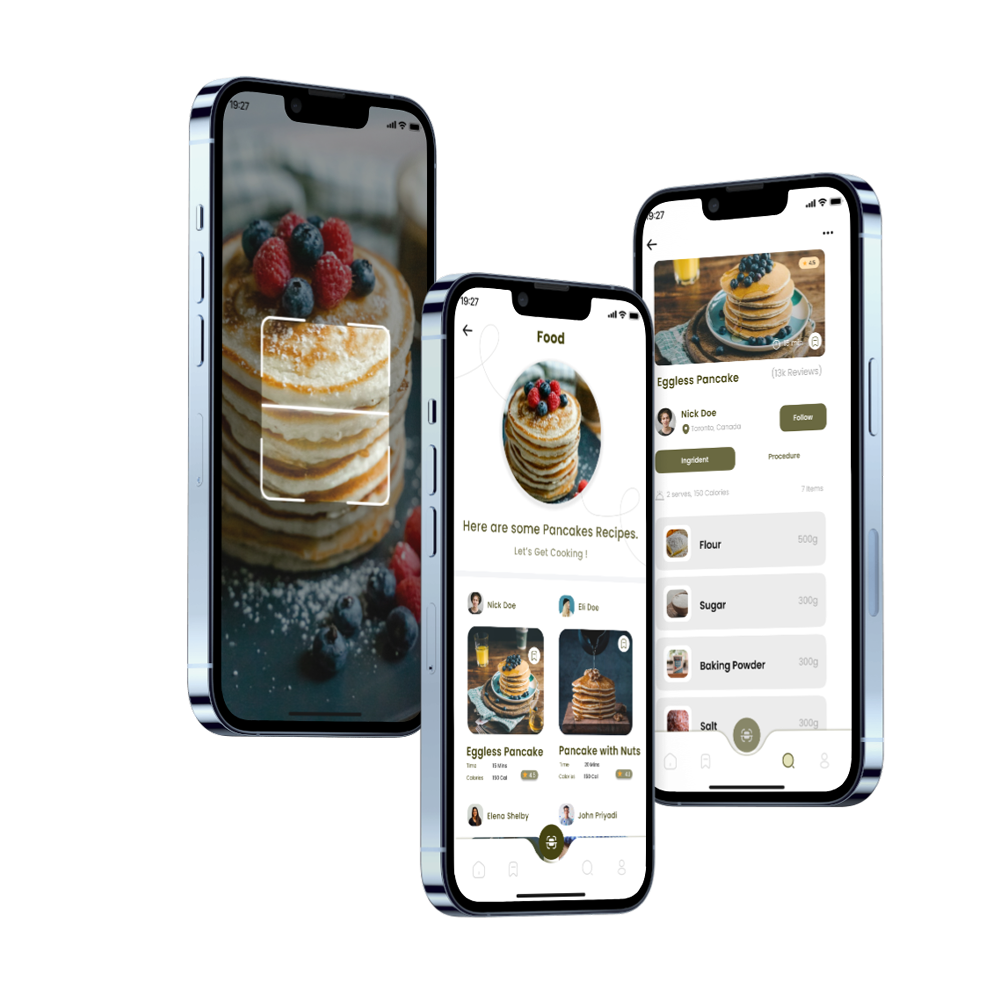
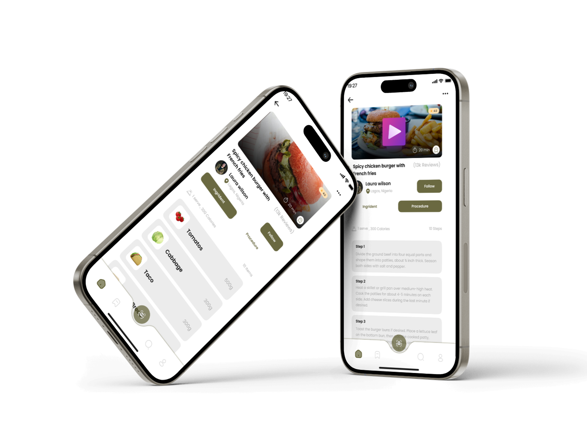
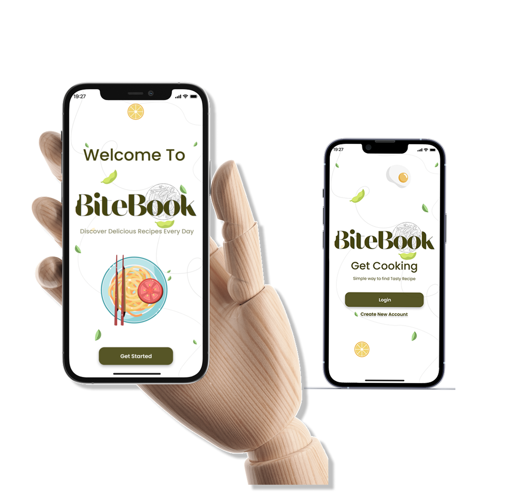

UX Case Study
BiteBook
Your Recipe Friend - a mobile application for discovering delicious recipes with advanced search and filtering capabilities.

Project Overview
The Product
BiteBook is a comprehensive mobile application that revolutionizes how users discover and prepare recipes. The app features intelligent filtering by cuisine type, cooking time, and user reviews, complemented by innovative voice and image-based search capabilities. Users can watch recipe videos, track cooking progress, and easily share recipes with friends and family.
The Problem
Home cooks struggle with finding recipes that match their dietary preferences, available ingredients, and time constraints. Without a unified platform, users waste time browsing multiple sources, dealing with unclear instructions, and lack personalized recommendations based on their cooking skills and preferences.
The Solution
Designed BiteBook as an all-in-one recipe discovery platform featuring advanced filtering options, voice and image search, video tutorials, and social sharing. The intuitive interface guides users from recipe discovery to meal preparation, with time estimates and ingredient management streamlining the cooking process.
Tools & Technologies
Design & Research
Figma, Adobe Illustrator, Procreate, Canva
Prototyping
Figma Prototyping, Interactive Flows
Design System
Typography, Color Palette, Icon Library, Component Library
Low-Fidelity Wireframes
Creating basic layouts to visualize the structure and placement of elements on each screen.

High-Fidelity Design
Final UI screens showcasing the complete visual design system and user experience.



My Contribution
Research & Strategy
- Analyzed competitor recipe apps to identify strengths, weaknesses, and market opportunities
- Conducted user research to understand target user needs and cooking behaviors
- Developed user personas and user journey mapping for recipe discovery
- Created information architecture for intuitive recipe navigation and filtering
UI/UX Design
- Designed complete visual identity and new logo for the brand
- Created low-fidelity and high-fidelity wireframes in Figma from scratch
- Developed comprehensive design system with typography, colors, and icons
- Designed intuitive interfaces for recipe search, filtering, and preparation tracking
Key Features Designed
- Voice and image-based recipe search functionality
- Multi-criteria filtering by cuisine, cooking time, and reviews
- Recipe video integration and tutorial player
- Social sharing and recipe collection system
- Ingredient management and cooking timer